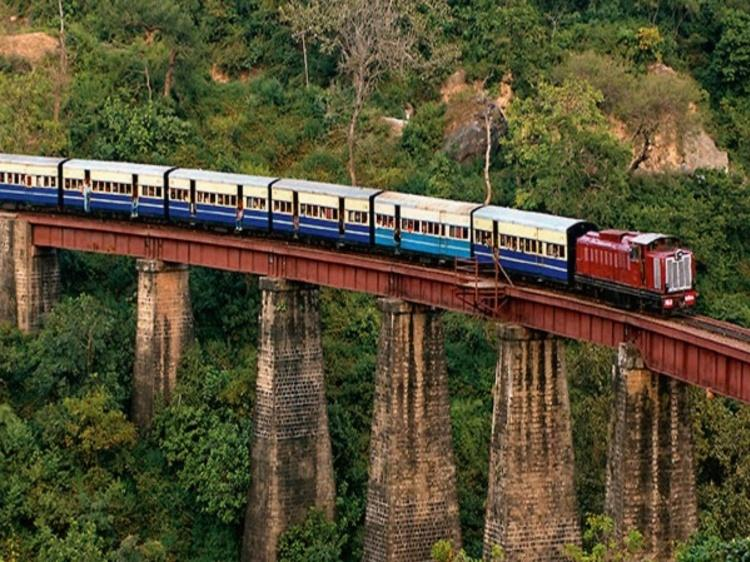

interesting facts about India Railways 1) Indian Railways started its service 161 years ago on 16 April 1853 when the first passenger train was run over a stretch of 33 kilometres from Mumbai to Thane. The train with 14 railway carriages, carrying around 400 guests, left Bori Bunder at 3:30 p.m. that day. It was declared a public holiday then. 2) Nationalised in 1951, Indian Railways is today the largest rail network in Asia and the world’s second largest network operated under a single management. It has 115,000 km of track length. It runs 12,617 trains to carry over 23 million passengers daily – equivalent to moving the entire population of Australia – connecting more than 7,172 stations. 3) Railways runs more than 7,421 freight trains carrying 3 million tonnes (MT) of freight every day. It has entered a select club of railways that includes China, Russia and USA in carrying more than one billion tons of freight annually. Indian Railways has over 239,281 freight wagons, 59,713 passenger coaches and 9,549 locomotives. t 4) A separate budget for the Railways has its genesis in the recommendations of the 10-member Acworth Committee in 1920-21, headed by British railway economist William Acworth. Following his report, the railway finances of India were separated from the general government finances in 1924. 5) In the post-Independence era, railways accounted for 75% of public transport and 90% of freight. Hence, the need for a separate budget. Today, in contrast, the share has reduced to 15% and 30%. 6) The first live telecast of railway budget took place on 24 March 1994. Lalu Prasad Yadav, who remained Railway Minister from 2004 to May 2009 presented the railway budget six times in a row. 7) In 2000, Mamata Banerjee, who is the current Chief Minister of West Bengal, became the first woman Railway Minister. In 2002, she also became the first female railway minister to present the railway budget. Additionally, she holds the record of being the only woman who presented the railway budget for two different governments in the centre (NDA and UPA). 8) India’s fastest train has successfully completed a trial run at 160 km per hour. In a few months, with the rollout of the first semi-high speed train, passengers will be able to travel between Delhi and Agra in just 90 minutes, cutting the journey time by 30 minutes. 9) The New Delhi-Bhopal Shatabdi is currently the fastest train on the Indian Railways network. It reaches a maximum speed of 150 kmph on the Faridabad-Agra section. The Metupalayam-Ooty Nilgiri Passenger train, which runs at an average speed of 10 kmph, is the slowest train. 10) The New Delhi Railway Station has secured a place in the Guinness Book of Records for having the world’s largest Route Relay Interlocking System. This system is put to use where multiple tracks are interlocked. It helps divert train movements during periods of high traffic volumes.
A train is a set of carriages on a railway. A place where a train stops to let people get on and off is called a Train station or railway station. Early trains used horse power and ran on wooden or iron tracks. ... The locomotive or railway engine (usually the first car of the train) pulls the cars along the track
People come from different parts of the world to visit Darjeeling just for a joyride on this narrow gauge railway track, which is listed in the UNESCO World Heritage Sites list. The toy train chugs its way across beautiful mountains and offers jaw-dropping views of Mt Kanchenjunga
The Konkan Railway route offers amazing natural beauty throughout the journey, which includes the majestic and magnificent Sahyadri mountain ranges, a number of stunning curves, river bridges, lakes and waterfalls.
Tipped for UNESCO World Heritage status, the Kangra Valley Railway might be one of India's best-kept secrets. For breathtaking views of the Dhauladhar mountain range, you should travel this route at least once. It’s probably the most scenic train route in India
The Desert Queen rail route offers the beauty of barren desert land, sand dunes, desert wildlife and tribes. This train route passes through the dry forest and waste land of the Thar Desert of Rajasthan

This incredible journey lasts for around five hours, and is definitely the most scenic trip that is passing through 20 railway stations, 800 bridges, 103 tunnels, and 900 curves before reaching Shimla